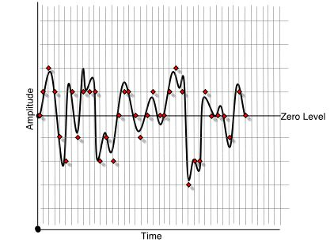
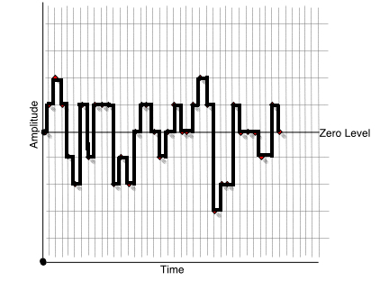
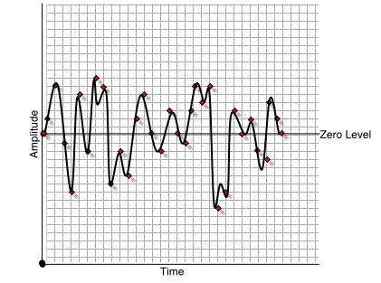
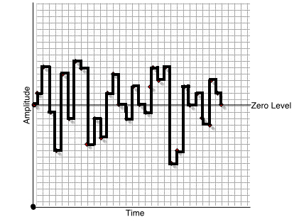

Right now you are probably viewing this on a computer monitor. Your monitor is set to present some number of colors—perhaps 16 colors, or 256, or maybe thousands or millions. If you have experimented with monitor settings, you have experienced what monitor resolution means—the more colors you display, the more vibrant and realistic the image.
Computers are binary machines. That is, they only work with zeros and ones. Each digit (either a zero or one) that a computer processes is called a bit. In binary math, 16 values (0 - 15) may be expressed in 4 bits. So if your monitor is in 16-color mode it is only using 4 bits for each pixel in its display. If your display is set to 1024 x 768, you have 786,432 pixels, each at 4 bits. That means each screen takes 3,145,728 bits to store, or about 393 kilobytes (KB). Increase the resolution to 256 colors and now you have 8 bits of storage for each pixel, and a screenfull would take 786 KB to store. Increase your resolution to millions of colors, and each screen could take as much as 3 megabytes (MB) of storage!
All this math about your monitor illustrates the difference between 16, 256, and millions of colors. As you can see, the observable improvement comes at a cost in terms of storage and processing. The same is true with sample resolution, or the number of bits each sample takes to store.
Perhaps another visual explanation will make this more understandable. Returning to the example we used for examining the concept of sample rate, we see that the time continuum is broken into discrete quantifiable units by the sample points. The amplitude range can be divided into some number of discrete units based on how big a number we use to express the entire range. For instance, if we have an 8 bit sample resolution, we would divide the amplitude continuum into 256 points.
|  |  |
| Figure
7.14. The amplitude range divided into discrete levels |
Figure
7.15. The resultant rounding errors |
At any sample point in time, the level stored must be rounded to the nearest quantum point, or in this case, one of the 256 numbers. This rounding, or quantization, will introduce distortion into the signal. This is sometimes called rounding or quantization errors. Figure 7.15 illustrates this error.
The larger the number of points by which we divide the amplitude range, the less likely it is that such quantization errors will occur. If we increase our sample resolution to 16 bits, we increase the number of potential values for our amplitude range to 65,536. The following examples show the result of increasing the sample resolution:
|  |  |
Figure 7.16. Increasing sample resolution yields higher fidelity.
We noted that CD-quality audio had a sample rate of 44.1 kHz, and that standard also calls for 16 bit resolution. This is often referred to simply as 16/44 resolution as a shorthand. Higher resolutions are now commonplace, with 24 bit being the standard for DVD audio (24/96 - 96 kHz sample rate). Mac OSX stores all audio in 32 bit format. But remember what we learned from our monitor example above: Higher resolutions = more storage. CD quality audio (16 bit, 44.1 Khz) takes approximately 10 MB for each stereo minute of sound. That same stereo minute of audio in 24/96 (DVD) format would take 33 MB to store.
We can generalize the overall effect of sample resolution as signal-to-noise ratio (S/N). Each bit of sample resolution yields a recording that is about 6dB (decibels, a measurement of loudness) of signal level relative to background noise. Therefore an 8 bit sample yields 48dB of signal-to-noise (S/N) ratio, about that of a cheap cassette recorder. A 16 bit sample gives 96dB S/N. By comparison, a professional analog tape machines yield about 76dB S/N.